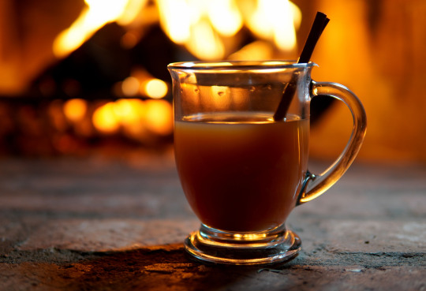

Hot Apple Cider

Inspired by WoW, this warm drink immediately inspires coziness. The base recipe alone is delicious, but is can easily lend itself to additions: such as cranberries or cranberry juice
If you want to knock up a notch, add some brandy or cinnamon whiskey for a tasty adult beverage!
Ingredients
For this, you'll need:
- 1 gallon apple juice
- 1 orange
- 12 cloves, whole
- 12 allspice, whole
- 2 large cinnamon sticks (or 4 small)
- 1/2-1 cup brown sugar, to taste
- optional mix ins: cranberry juice, brandy, other fruits, etc.
Steps
Follow along with these steps to make this tasty drink!
- Pour the apple juice into a large stockpot.
- Break the cinnamon stick into small pieces and bundle with other spices into a tea ball or cheesecloth.
- Slice up the orange and add it, and the spice bag, to the stockpot with apple juice.
- Bring to a boil and then simmer for 10 mintes.The longer you let it simmer, the tastier it will be - remember this!
- Taste along the way and add brown sugar - and any optional mix-ins.
- When ready to drink, strain the fruit and spices from the juice. Pour into mugs and enjoy!